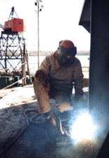

Yardbird Blues - by Arthur J. Miller
Upon the ships that sail the oceans wide, work the seafarers who make the ships sail. Upon the docks of the ports world wide, work the longshoremen who load and unload be ships. Those that build and repair the ships are called, by the seadogs and wharf rats, the yardbirds.
 Table of Contents
- Part 1: The Blues.
- Part 2: The Making of a Yardbird.
- Part 3: Down Houston Way.
- Part 4: Types of Maritime Vessels.
- Part 5: Making Dreams Real.
- Part 6: Blues Again.
- Part 7: Green's Bayou.
- Part 8: Improving the Goods.
- Part 9: Asbestos; the Dust of Death.
- Part 10: Speed Up and Die!!!.
- Part 11: The Mississippi and Louisiana Jack.
- Part 12: New Orleans Metal Trades Strike.
- Part 13: Pains in my Wrists.
- Part 14: Meeting Up With Todd Again.
- Part 15: It's a Love Boat!.
- Part 16: Fire on the Water.
- Part 17: Such a Foolish Notion.
- Part 18: Environmentalism and the Maritime Industry.
- Part 19: In the Belly of a Love Boat (I Got Them Old Fireroom Blues Again).
- Part 20: Greed Upon the Oceans - Flag of Convenience Ships.
- Part 21: Spiraling Downwards.
- Part 22: The Final Chapter.
YARDBIRD BLUES is a series of articles I wrote over the years on the maritime industry. Most have been published In Bayou La Rose, the Industrial Worker and other publications.
This book could not have been written or completed without the influence and direct help of a number of people, all who happen to have been Wobblies. I wish to start off with acknowledging Wobbly old timers Frank Cedervall, " Blackie" Vaughan, Walter Westman, Carl Keller, Fred Thompson, and Fred Hansen who taught me what being a rebel worker was all about.
I wish to thank old time Wobbly and rebel longshoreman Gilbert Mers for giving me the encouragement and Inspiration to write about work place experiences. I wish to thank my old friend and Fellow Worker Carlos Cortez for writing the introduction. I wish to thank the following younger Wobblies for reading over the manuscript and making it readable: Mark Damron, who spent many long hours working on this book, Joshua Freeze, Jason Adams and Paul Harris.
Despite having reached his maturity during the turbulent decades of the 60's and 70's, Arthur Miller is more than a product of that generation, unlike many of those contemporaries whose social consciousness was nurtured within the cloistered confines of university campuses. While not wishing to belittle the sincerity of those whose fortunate circumstances afforded them a higher education, it must be realized that not having to participate in the daily economics of seeing that there was food and shelter for one's family, they had the relative freedom to be able to see the inconsistency of the society they lived under, despite the fact that the training they were receiving was only preparing them to perpetuate that society.
Arthur on the other hand had been a working stiff from the start. Through his life of pursuing the paycheck, he was able to experience the futility and frustration of living under an exploitive economy. Where many of our class unfortunately seek to dull the nagging frustrations of that economy via the corner gin mill, the one-eyed monster in the living room, or deaden one's senses in the consumerist illusions, Arthur was able to discern the workings of the profit system and that any inequities of that system can only be remedied by those who make that system possible, the workers themselves.
While politicians and social reformers may speak lofty words about equality and human rights, their privileged position gives them a stake in the status quo. Arthur, like those activists of generations before him, drives home the obvious conclusion that only those who perform the physical labor of producing the World's goods are in a position of bringing about a better human society with true respect for all forms of life. His long standing membership in the Industrial Workers of the World is testimony to his dedication towards making this Planet of ours a better place to live. If one is desirous of knowing the machinations of those that control us, this is a book that should not only be read but passed on to others.
Scraping out a living the best that I can; family to feed, shelter to provide. Day after day, working within the steel shell of a metallic demon. Down in the lower holds, where the better people never see, I toil for a paycheck. Wages, a chain upon body and soul.
Pulling, placing, fitting, burning, welding joints of the arteries that gave life to the soulless apparition of manmade hell. Wading in bunker oil that penetrates my clothes and stains my skin. Breathing smoke with fine particles of metal that scar the lungs. Asbestos in the air; the dust of the angel of death.
Steel ain't got no bones about it. When in confrontation with the living, steel wins, bones break, blood flows. Danger is a companion, unwanted, but laughing at all concern. Crawling through a tank and the lights go out; even in the dark one can feel the enclosure of the steel bulkheads of this slave-constructed purgatory.
You cry out in rage at the conditions of toil, only heard by other slaves who share the same fate. The slaves are beaten down, ignorant of the power that they possess. It seems like there is no end in sight.
I fear not hell, for what could be worse than the hell of our own construction? Nothing more to do than to continue as we are. Lord, Lord, I got them old yardbird blues again.